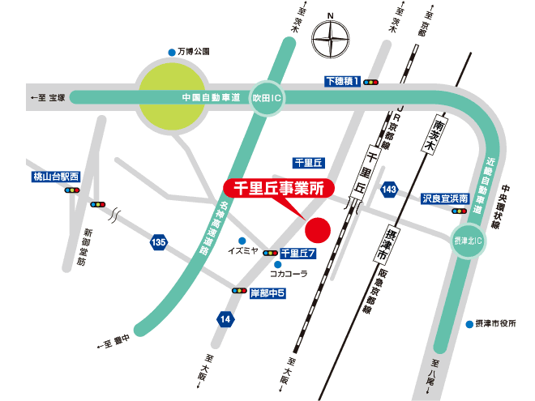

〒566-8686
大阪府摂津市千里丘3丁目14-40
TEL 06-6387-1181 FAX 06-6389-0577

■高速道利用の場合
●中国、名神道より
吹田出口を出て中央環状線（府道２号線）を茨木・守口方面へ
下穂積交差点を右折して（府道１４号線）を南へ約２．５ｋｍ
●近畿道より
摂津北I.Cを出て中央環状線の沢良宜西交差点を左折
千里丘駅前で左折してＪＲ線を潜り千里丘交差点を左折、
府道１４号線を南へ約４５０ｍ
■一般道利用の場合
●大阪方面より
新御堂筋（国道４２３号線）を北進、桃山台で側道に出て桃山台駅西を右折
府道１３５号線をしばらく走り、岸辺中５交差点を左折
（府道１４号線）を北へ約７００ｍ
●京都方面より
国道１７１号線 畑田交差点を左折して府道１４号線を南へ約４．５ｋｍ